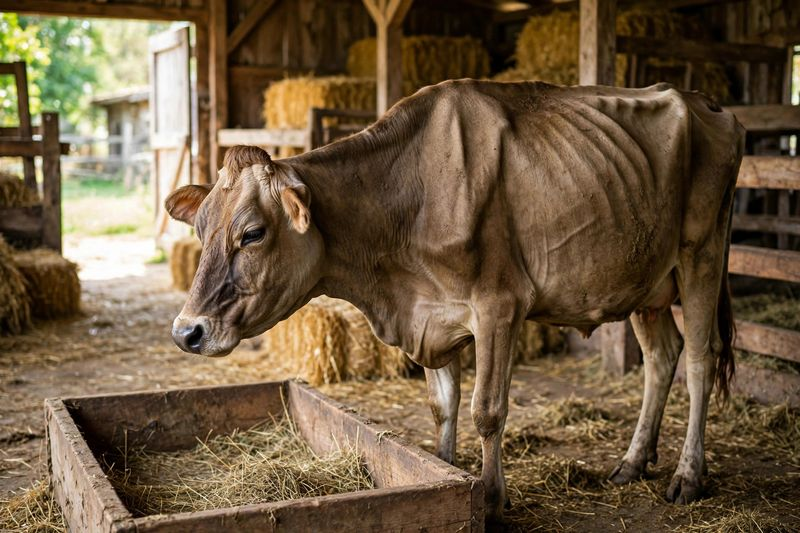
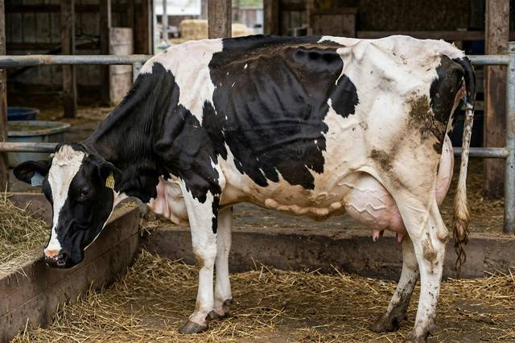
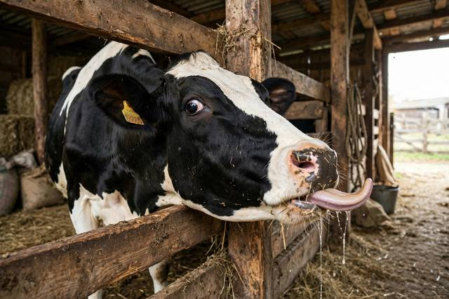
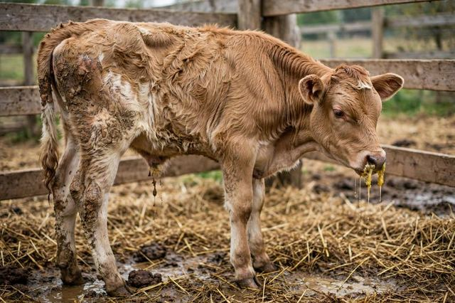

Ketosis in Cattle
Bovine ketosis (acetonaemia) — also called ketosis in dairy cows — is an important metabolic disorder associated with negative energy balance, especially in high-producing dairy cows during early lactation. This illustrated VetCare World guide introduces its causes, risk factors, classification, clinical forms and metabolic basis.
What you will learn
- Overview of ketosis and the role of glucose availability in the cow.
- Animals at risk, including high-yielding dairy cows in early lactation.
- Primary and secondary ketosis and the clinical forms described in the guide.
- Pathogenesis, negative energy balance, fat mobilisation and ketone-body formation.
- Factors associated with ketosis, metabolic changes and herd health monitoring.
- Practical points for early observation, feed-intake monitoring and prevention planning.
Clinical Signs
- 1Reduced appetite(Eats less than normal)
- 2Selective refusal of concentrate(Refuses grain but may still eat hay)
- 3Reduced milk yield(Milk drops suddenly)
- 4Weight loss(Loses body condition)
- 5Dry faeces(Hard, dry dung)
- 6Sweet or unusual smell on the breath or milk(Sweet, ketone smell on breath or milk)
- 7Restlessness(Restless and agitated)
- 8Abnormal licking(Licks objects abnormally)
- 9Unsteady walking(Staggers or walks unsteadily)









Causes and Risk Factors
Risk increases in high-yielding cows in the first weeks after calving, over-conditioned cows at calving, inadequate dry-matter intake, disease around calving and poor transition-period management.
Diagnosis
Blood beta-hydroxybutyrate (BHB) testing is the most reliable method. Milk or urine ketone tests may help screen cows, but results should be interpreted with clinical findings and stage of lactation.
Treatment and Case Management
Treatment depends on severity and concurrent disease. A veterinarian may recommend energy support such as glucose therapy and investigate displaced abomasum, metritis, mastitis or other causes of reduced intake. Avoid unsupervised dosing or repeated drenching of weak animals.
When to seek urgent help: A cow that is recumbent, severely depressed or not eating needs prompt veterinary examination.
Recommended Medicines
- 1Supportive care – Dextrose 50%(Energy support — raises blood glucose)250–500 ml IV
- 2Supportive care – Propylene glycol(Energy source to correct negative energy balance)200–250 g PO twice daily
- 3Supportive care – Dexamethasone(Helps raise blood glucose, only on veterinary advice)0.05–0.2 mg/kg IV/IM (avoid in late pregnancy)
- 4Supportive care – Multivitamins(Supports recovery)10 ml IM daily
- Treat ketosis early — a cow off its feed after calving needs the vet.
- Never drench a weak cow repeatedly without veterinary guidance.
- Use medicines only under veterinary advice.
- Watch fresh cows closely for a drop in milk or appetite.


Prevention and Herd Management
Maintain body condition targets, maximise feed access and palatability, minimise overcrowding, monitor fresh cows closely and investigate illnesses that reduce feed intake. Good transition nutrition before and after calving is the most important prevention step.
Who is this guide for?
This free educational resource is intended for veterinary students, veterinarians, dairy farmers, livestock professionals and animal-health educators who want to strengthen their understanding of bovine ketosis.
About this PDF
The illustrated guide contains an opening disease banner followed by ten educational topic pages. Its content is adapted in simplified language from Text Book of Clinical Veterinary Medicine, Metabolic Diseases – Ketosis (Acetonaemia: Hypoglycaemia), pages 564–569, as identified in the PDF.
Important: This is an educational reference, not an individual treatment prescription. The PDF does not provide drug doses. Diagnosis and treatment decisions must be based on veterinary examination and current local product guidance.
Read the complete illustrated guide
Open the public PDF to view the complete VetCare World learning resource online or save it for offline study.
Frequently Asked Questions
What are the symptoms of ketosis in dairy cows?
Reduced appetite, selective refusal of concentrate, reduced milk yield, weight loss, dry faeces and sometimes a sweet or unusual smell on the breath or milk. Some cows show nervous signs such as restlessness, abnormal licking or unsteady walking. Subclinical cases may show no obvious signs except a drop in milk.
How is ketosis in cattle treated?
Treatment depends on severity and concurrent disease. A veterinarian may recommend energy support such as glucose therapy and investigate other causes of reduced intake, such as displaced abomasum, metritis or mastitis. Avoid unsupervised dosing or repeated drenching of weak animals.
What causes ketosis in cows after calving?
Risk increases in high-yielding cows in the first weeks after calving, when energy demand outruns feed intake and the body breaks down fat, forming ketone bodies. Over-conditioned cows at calving, inadequate dry-matter intake, disease around calving and poor transition-period management all increase risk.
How can ketosis in dairy cows be prevented?
Maintain body condition targets, maximise feed access and palatability, minimise overcrowding and monitor fresh cows closely. Good transition nutrition before and after calving is the most important prevention step.
What is the BHB test for ketosis?
Blood beta-hydroxybutyrate (BHB) testing is the most reliable method of diagnosing ketosis in cattle. Milk or urine ketone tests may help screen cows, but results should be interpreted with clinical findings and stage of lactation.
What is the treatment for ketosis in cow?
Treatment depends on severity and concurrent disease. A veterinarian may recommend energy support such as glucose therapy and investigate other causes of reduced intake, so avoid unsupervised dosing or repeated drenching of weak animals.
Why is my cow milk decreasing after calving?
A drop in milk after calving can be a sign of ketosis, especially with reduced appetite, weight loss and a sweet smell on the breath. Subclinical ketosis may show no obvious signs except a drop in milk, so BHB testing can confirm it.
گائے میں کیٹوسس کا علاج کیا ہے؟
علاج کی شدت اور ساتھ کی بیماری پر منحصر ہوتا ہے۔ ویٹرنری ڈاکٹر توانائی کی کمی دور کرنے کے لیے گلوکوز تھراپی تجویز کر سکتا ہے اور بھوک کم ہونے کی دوسری وجوہات کی جانچ کرتا ہے۔ کمزور جانور کو بغیر ڈاکٹری مشورے کے دوا نہ دیں۔
Related disease guides
All disease guides · Milk Fever · Mastitis in Cattle · Knowledge Centre